Kashimashi, Ibaraki: things to do, food and stays
Kashimashi · Ibaraki
Kashimashi
Highlighted on the Ibaraki map.
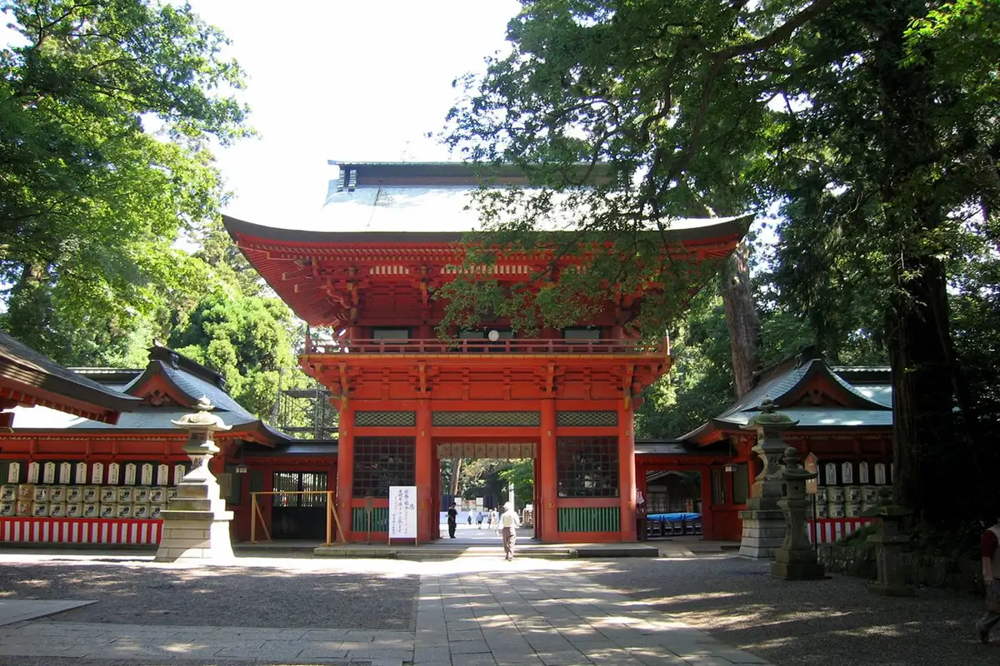
Stay
ホテルルートイン鹿嶋
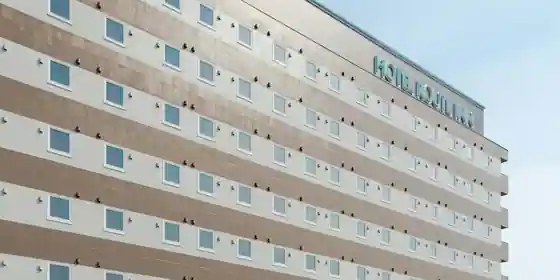
Hotel Route Inn Kashima
Hotel in Chosei, Kashimashi with parking and a large communal bath.
神宮ホテル
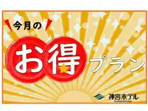
Jingu Hotel
Hotel in Kyuchu, Kashimashi with business travelers.
ホテルがんけ
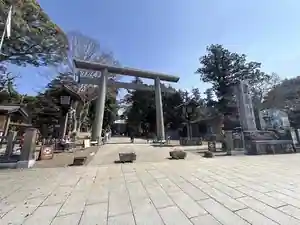
Hotel Ganke
Hotel in Kyuchu, Kashimashi; 3-minute walk from Kashimajingu Station.
ビジネスホテル鈴章
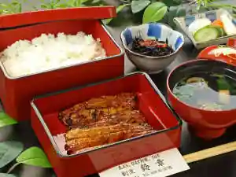
Business Hotel Suzu Sho
Hotel in Miyashita, Kashimashi with business travelers; 1-minute walk from Kashimajingu Station.
No.12 Kashima Fan Zone
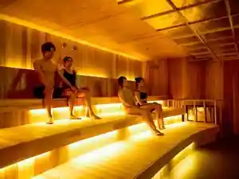
No. 12 Kashima Fan Zone
旅館ほりぐち
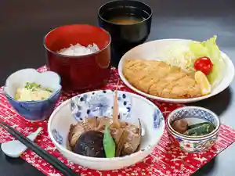
Ryokan Horiguchi
Ryokan inn in Hirai, Kashimashi with business travelers.
GLAMPING KASHIMA 753 #00
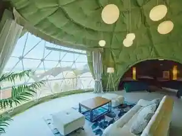
GLAMPING KASHIMA 753 #00
Dining
らーめん青龍
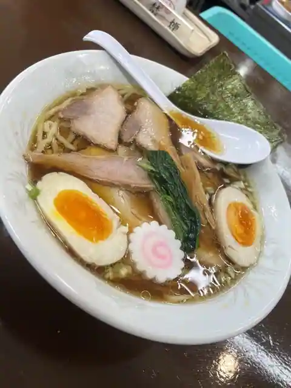
Ramen Seiryu
今久 鹿嶋店
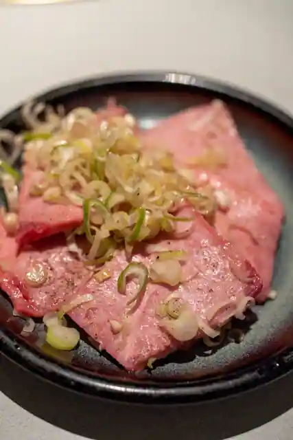
Ima Kyu Kashima
一休
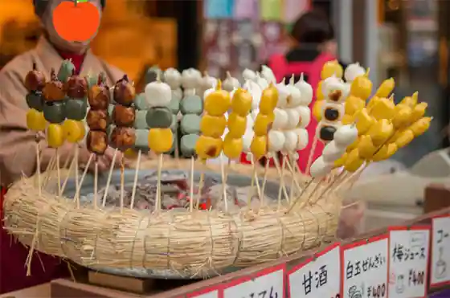
Ikkyu
とんかつ きたき
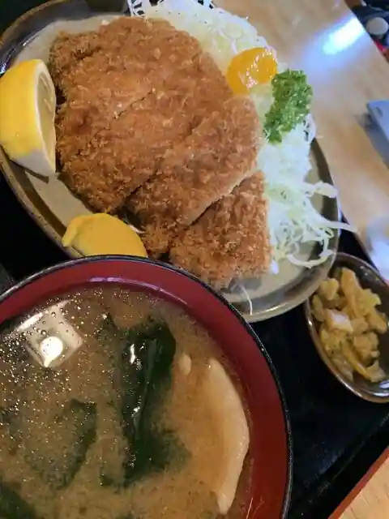
Tonkatsu Kitaki
エスプレッソ ディー ワークス 鹿嶋店
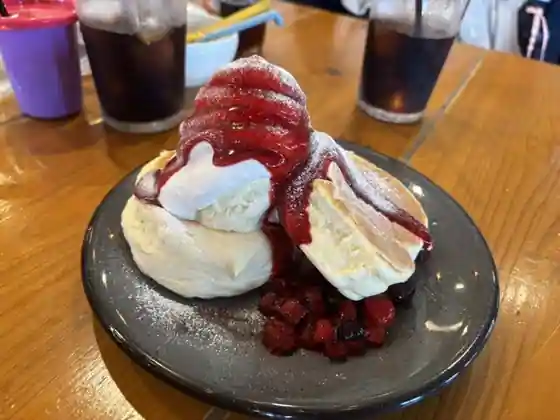
Esupuresso Di Wakusu Kashima
浜茶屋 やましょう
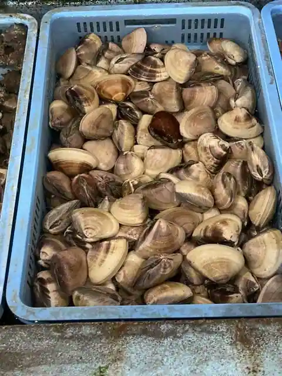
Hama Chaya Yamasho
浜焼き 漁師小屋
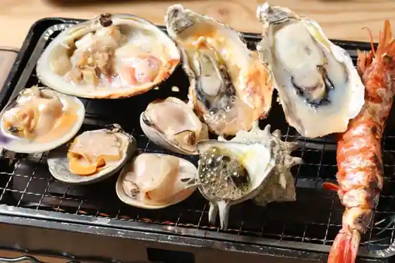
Hamayaki Ki Ryoshi Koya
鈴章
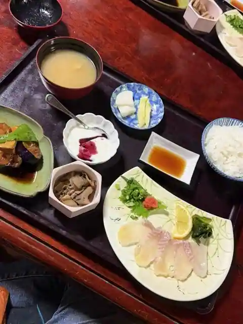
Suzu Sho
ウツギ酔賓店
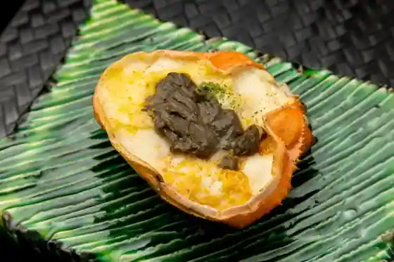
Utsugi Sui Hin
キッチン SALA
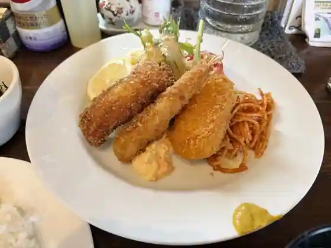
Kitchen SALA
千代
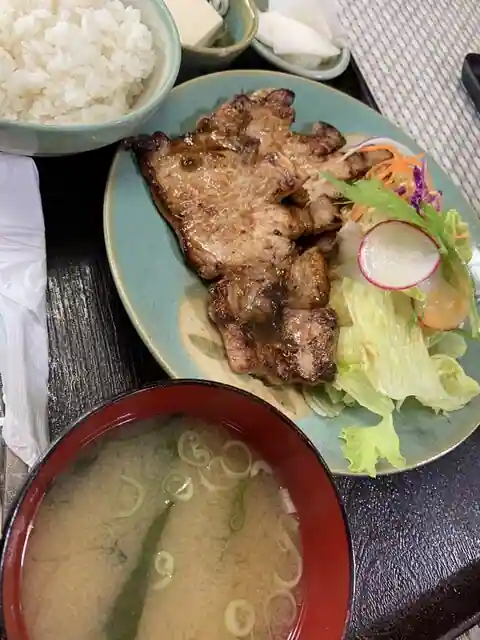
Chiyo
支那そば へいきち二代目 鹿嶋店
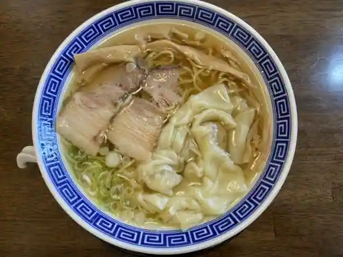
Shina Soba Heikichi Nidaime Kashima
カシマサッカースタジアム 売店
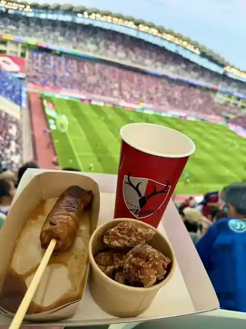
Kashimasakkasutajiamu Bai
豊栄丸
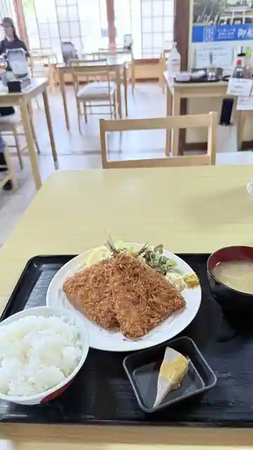
Toyosaka Maru
加賀屋
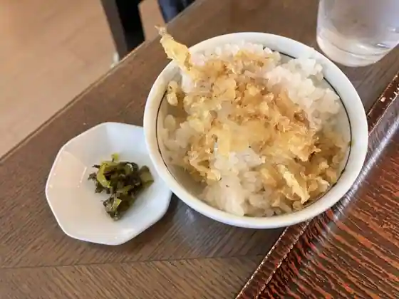
Kagaya
手作り餃子の劉さん
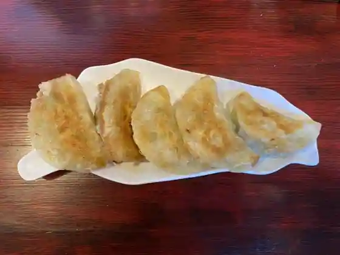
Tezukuri Gyoza No Ryu San
うちだや
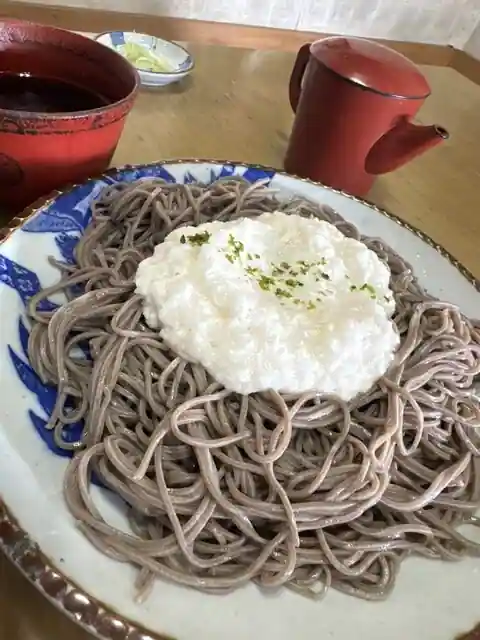
Uchidaya
王道!!背脂煮干中華そば 潤
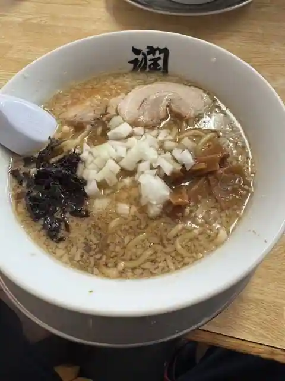
Odo!! Seabura Niboshi Chuka Soba Jun
魚吉食堂
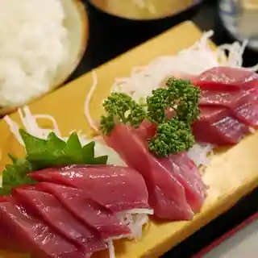
Sakana Kichi Shokudo
丸三老舗 神宮駅前店
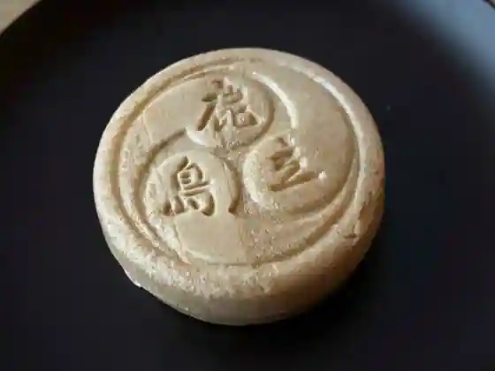
Marusan Shinise Jingu Ekimae
瀞
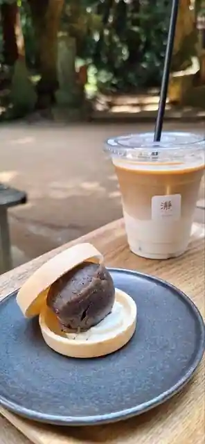
Toro
坂東太郎 鹿嶋店
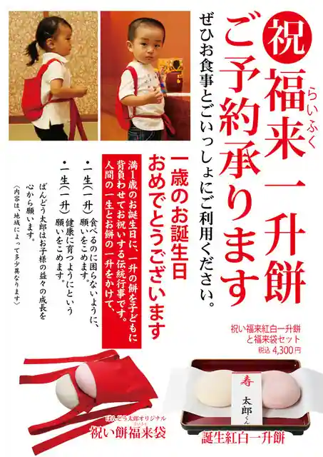
Bando Taro Kashima
貴楽飯店
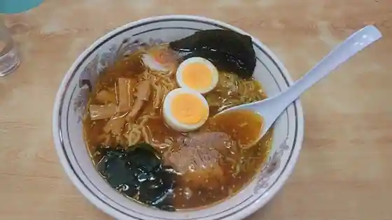
Takashi Raku Meshi
かしま 甘太郎 鹿島神宮参道店
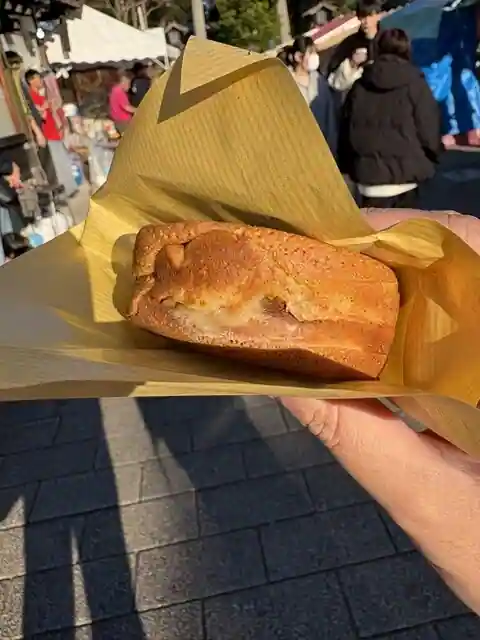
Kashima Kantaro Kashima Jingu Sando
Sights
Kashima Shrine
Mori no Asobiba Shika Suke
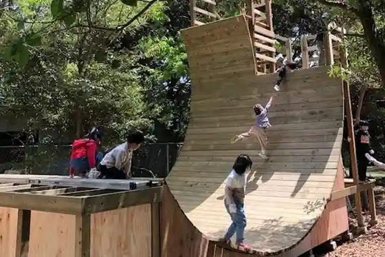
Merukarisutajiamu / Prefectural Kashimasakkasutajiamu
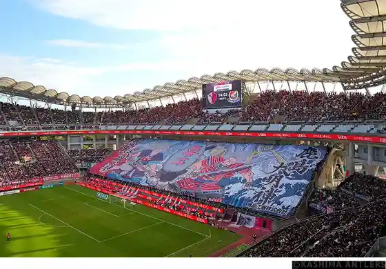
Kashimashi Ritsu Kashimasupotsu Center
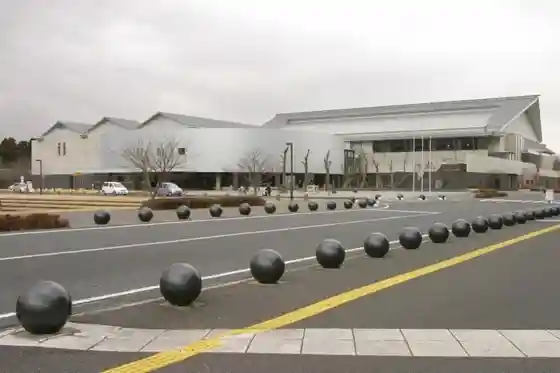
Hirai Beach
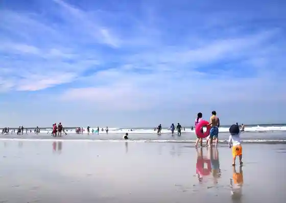
Kashima Haitsusupotsu Plaza
Kashima Minato Uotsuri Sono
Shiosai Hamanasu Park
Nihonsei Tetsu (Kabu) Higashinihon Seitetsusho Kashima Chiku
Tsukahara Bokuden no Zo
Kisetsu Ryori Shiki Tei
Kashima Shiroyama Park
Wafu Resutoran
Yakiniku Ushiwakamaru
Kamome So
Ibarakiken Saibai Gyogyo Center
Pateisurii Momburan
Kin San Ie (Kimu Sanchi)
Izakaya Shuko Iori Hitoshi Warai Mon